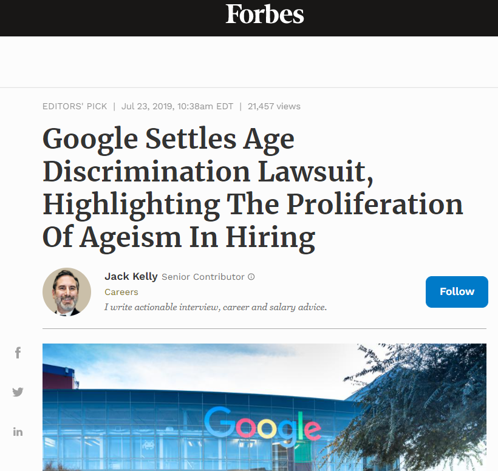
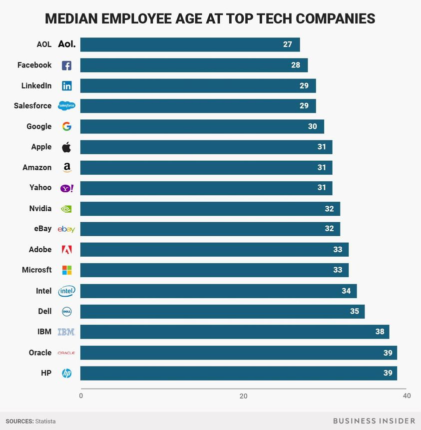
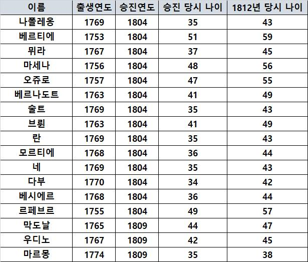

기업도 나이를 먹는다
게시: 2021-11-18T06:30:09+09:00
헤밍웨이의 "무기여 잘 있거라" 중에서 -------- (시대적 배경은 제1차 세계대전 당시입니다. 주인공은 이탈리아군에서 구급차 장교로 복무하다가 탈영한 미국인입니다. 그는 애인과 함께 호텔 등에서 숨어지내다 전에 알던 그레피(Greffi) 백작이라는, 나폴레옹 시대의 인물인 메테르니히와 동시대에 살던 94세의 노인과 만나 당구를 치며 이야기를 나눕니다.) "진짜로, 이 전쟁에 대해 어떻게 생각하세요?" 내가 물었다. "바보짓이라고 생각하네." "누가 이길까요?" "이탈리아지." "왜요?" "더 젊은 나라니까." (당시 이탈리아는 오랫동안 여러 개의 왕국과 공국 등으로 분리되었다가 통일 이탈리아 왕국이 된지 몇십 년 되지 않은 신생국이었습니다.) "더 젊은 나라가 언제나 전쟁에서 이기나요?" "최소한 한동안은 더 잘하다네." "그러고 난 뒤에는 어떻게 되나요?" "늙은 나라가 되는 거지." "방금 전에 자신이 현명한 것이 아니라고 하시더니 ㅋ" "이 친구야, 그건 현명한 것이 아니라 냉소적인 거라네." "저한테는 현명한 소리로 들립니다." ------------------------ 의외로 많은 분들이 과학고나 외고 같은 특목고와 자사고, 즉 자율형 사립고등학교를 헷갈려 하십니다만, 특목고와 자사고는 상당히 다른 학교입니다. 특목고는 성적순으로 들어가는 고등학교이지만 자사고는 (하나고와 같은 일부 전국구형 자사고를 제외하고는) 일정 성적을 충족하면 (가령 중학교 내신성적 상위 50%) 그냥 면접과 추첨으로 입학생을 뽑습니다. 단, 자사고와 일반고는 매우 중요한 차이가 있습니다. 자사고는 학비가 꽤 비쌉니다. 즉, 자사고는 공부 잘하는 애들이 가는 고등학교라기 보다는, 자녀 교육에 돈을 꽤 쓰겠다는 의지와 여유가 있는 집 자식들이 가는 고등학교라고 보는 것이 맞습니다. 그래서 보통 오해하는 것이, 자사고의 전체 예산이 일반고보다 훨씬 많을 것일라고 생각하지만 의외로 일반고와 학생 1인당 예산이 그렇게 큰 차이가 나지 않습니다. 단지 자사고와 일반고의 차이는, 일반고는 국비 보조를 받고 자사고는 국비 보조 없이 전액 학부모들의 등록금으로 예산을 채운다는 것입니다. 따라서 이론적으로 보면 자사고 학생들이 일반고 학생에 비해 더 나은 교육을 받게 될 근거가 없습니다. 그러나 실제로는 자사고 교사들이 더 우수한 경우가 많고, 또 자사고 교사들의 급여가 더 높은 것이 현실이라고 합니다. 대체 그 이유가 뭘까요? 그 이유는 의외로 단순합니다. 바로 교사들의 나이입니다. 교사의 평균 연령에 있어서 자사고가 일반고보다 눈에 띄게 더 낮다고 합니다. 즉 일반고라면 경력 20년차의 교사가 받을 급여를 자사고에서는 경력 10년차 미만의 교사들이 받으니 더 우수한 교사를 채용할 수 있는 것입니다. 결국 자사고의 경쟁력은 교사들의 젊은 나이에 있는 셈입니다. 그러나 모든 사람은 나이를 먹습니다. 결국 자사고의 젊은 교사들도 늙어가지요. 따라서 결국 시간이 지나면 자사고는 등록금을 올리든가 교사들의 급여를 동결하든가 해야 합니다. 그러나 이미 높은 자사고 등록금을 더 높이는 것은 어려우니, 아마 교사들의 급여가 동결될 가능성이 높고, 그러면 우수한 교사들은 사교육 시장으로 이탈하게 될 것입니다. 그러면 자사고에서는 그렇게 이탈한 우수 교사 대신 더 젊은 교사를 뽑게 될텐데, 그건 매우 희망적인 시나리오일 뿐이고, 모든 교사들이 일정 시간이 지나면 모두 그렇게 사교육 시장으로 가서 더 높은 연봉을 받게 되는 것은 아니므로, 상당수의 자사고는 정체되고 열의 없는 늙은 교사를 거느리게 됩니다. 결국 교사들이 늙어가면서 자사고의 경쟁력이 떨어질 수 있다는 이야기입니다. 그런데 이건 일반 기업에도 적용되는 이야기입니다. 신생 기업 직원들의 평균 나이는 낮은 경우가 많습니다. 그리고 그런 신생 기업 중 시장에서 성공하여 기업이 성장하면 젊은 신입/경력을 더 많이 뽑으니 직원 평균 나이를 계속 젊게 유지할 수 있습니다. 하지만 기업도 나이를 먹습니다. 흔히 사람은 나이를 먹지만 기업 같은 조직은 나이를 먹지 않는다고 생각하지만, 기업도 결국 사람으로 구성된 조직이므로 사람이 변하지 않으면 나이를 먹습니다. 특히 성장이 멈춘 기업은 급속도로 나이를 먹습니다. 성장이 멈추면 직원 수를 늘릴 수 없고, 그러면 젊은 신입사원이 들어올 수가 없습니다. 특히 그렇게 성장이 멈춘 기업일 수록 기존의 늙은 직원들이 이직을 하지 않는 경향이 있습니다. 잘 나가던 기업의 성장이 멈췄다는 것은 그 기업이 활약하던 분야 전체의 성장이 멈춘 경우가 대부분인데, 그럴 경우 기존 늙은 직원들이 이직할 여지가 많지 않기 때문입니다. 결국 직원의 평균 연령이 높아지게 됩니다. 직원의 급여는 경력과 직급이 높아질 수록 매년 올라가는데, 불행히도 사람의 생산성은 나이를 먹는다고 꼭 올라가는 것은 아닙니다. 그러니 비용만 늘어날 뿐 기업 생산성이 떨어지게 됩니다. 그렇게 그 기업의 성장 여럭은 더욱 없어지고, 그러다가 결국 경쟁력을 잃고 기업이 망하게 됩니다.

(그냥 나이든 사람들을 해고하면 문제가 모두 해결되는 것 아닐까요? 해고가 자유로와서 기업하기 좋다는 미국에서도 차별금지는 엄격하며 엄청난 배상금이 걸린 소송이 횡행합니다.)
이걸 피할 방법이 있을까요? 보수파들이 주장하는 대로 '해고를 쉽게 만들어 노동 경직성을 해결'하면 될까요? 가령 나이 45세가 넘도록 임원이라는 극소수의 엘리트 직위까지 승진하지 못한 직원들을 무능력자로 몰아서 쫓아낸 뒤 젊은 직원을 뽑으면 간단하지 않을까요? 안 됩니다. 노동법 위반 이전에, 그렇게 직원에게 가혹한 기업에게는 우수한 인재들이 가지 않습니다. 아마 그런 개차반 기업은 성장하기도 전에 망해버릴 겁니다. 그리고 구굴에서 age discrimination이라는 키워드로 검색을 해보면 얼마나 많은 미국 기업들이 그런 나이 많은 직원에 대한 차별건으로 소송을 당해서 거액의 합의를 보거나 배상금을 물어내는지 보실 수 있습니다. 사람은 성별이나 종교 뿐만 아니라 나이도 차별하면 안되는 것입니다. (많은 노인들이 차별금지법을 반대하는 것은 무척 슬픈 일입니다.) 결국 인간이 영원히 살 수 없듯이, 기업에게도 사람처럼 수명이라는 것이 있어서 처음에는 성장을 하다가 직원들과 함께 늙어가고 결국 죽게 된다는 것을 받아들여야 합니다. 미국 테크 기업들만 보더라도, 잘 나가는 기업들은 확실히 직원들 나이가 어립니다. 그에 비해 HP나 Oracle, IBM처럼 성장세가 한풀 꺾인 오래된 기업들은 직원들 나이가 확실히 많지요.

(2017년에 나온 표입니다. 아마 지금은 윗쪽 기업과 아랫쪽 기업의 연령차가 더 벌어졌을 것입니다. 아랫쪽 기업들은 채용을 별로 많이 하지 않았거든요.)
그래도 장수 기업들도 있지 않나요? 있습니다. 그런 기업들은 인구의 증가 등에 따라 시장 자체가 꾸준히 성장했거나, 또는 도중에 기업의 본질을 확 바꾸어서 (가령 섬유업을 하다가 반도체 사업에 뛰어드는 식으로) 성장하는 다른 시장으로 전환을 했거나 하는 경우입니다. 그러나 모든 기업들이 그럴 수는 없는 법입니다. 실제로 우리나라 100대 기업 중 매출액 규모를 100위 안쪽으로 유지하는 기간은 평균 43년 정도라고 합니다. 미국의 경우도 Forbes 100대 기업 리스트를 보면 1917년에 리스트에 있던 기업 중 1987년, 즉 70년 후에도 그 리스트에 이름을 올린 기업은 불과 18개 밖에 없습니다. S&P 500 지수에 편입되어 있던 500개 기업의 경우는 더욱 참혹하여, 1957년 리스트에 있던 기업 중 1997년, 즉 40년 후에도 리스트에 남아 있는 기업은 74개 뿐이었습니다.
국가의 경우는 어떨까요? 기업과 같은 조직과는 달리, 국가는 국민 그 자체이므로 국가는 나이를 먹지 않는 것 같지만, 국가도 나이를 먹습니다. 출산율 저하와 노인 평균 수명 연장에 따른 국가적 노령화 문제도 심각합니다만, 국가의 나이란 특히 어떤 연령대의 사람들이 국가 조직과 주요 기업들의 권력을 쥐고 있느냐에 좌우되는 것 같습니다. 특히 기득권 세력이 은퇴하지 않고 계속 재산과 경영권, 국가 권력을 쥐고 있는 것이 국가 경쟁력에 큰 악영향을 끼칩니다. 대표적인 예가 일본입니다. 노인층이 많은 자산을 손에 쥔 채 별다른 소비를 하지 않는 것이 사회 전반적인 활력을 떨어뜨리지요. 그렇게 나이든 사람들이 기득권을 차지하고 사회를 좌우하면 국가 전체의 생기가 떨어집니다. 자기들의 청춘을 갈아넣은 내연기관에 여전히 집착하는 꼰대들이 득실거리는 토요타 자동차와, 젊은 엘론 머스크가 이끄는 테슬라를 비교해봐도 알 수 있습니다. 우리나라 정계에서도 586 세력에 대한 불만이 많지요. 그 양반들도 어느덧 기득권이 되었지요.
미국이 세계를 제패한 이유에는 그 제도적 문화적 지리적인 요인도 크겠으나, 젊다는 점도 한몫 했다고 봅니다. 러시아도 로마노프 왕조의 제국으로 덩치에 맞는 힘을 쓰다가 무너져 젊은 소련으로 재탄생한 뒤에는 젊은 힘을 발휘해서 히틀러를 물리치고 미국과 맞먹었지요. 물론 공산주의의 폐해 때문에 조로증을 앓다 망했습니다. 그런 젊은 제국 중 하나가 나폴레옹의 제1 프랑스 제국이었습니다. 무력으로 쌓아올린 나폴레옹의 제국의 흥망성쇠도 결국 그 주요 지휘관들의 연령대에 의존한 결과가 되었습니다. 확인된 이야기는 아니지만 나폴레옹도 45세가 넘은 사람은 지휘관으로 쓰길 꺼렸다고 합니다. 나폴레옹 본인을 포함하여 그의 부하들이 리즈 시절일 때 나이가 어땠는지를 보면, 확실히 다들 공훈을 세운 것은 30대였고, 그들이 그대로 늙어서 40대 후반이 되자 러시아에서 삽질한 뒤 망했지요. 대표적인 경우가 오쥬로와 마세나입니다. 오쥬로는 나폴레옹의 원수들 중 나이가 많은 편이었는데, 나폴레옹의 출세 초창기인 이탈리아 전선에서 마세나와 함께 '나폴레옹의 원투 펀치'로 활약할 당시 40세가 막 넘은 나이였습니다. 그러나 이후에는 활약이 뜸했지요. 이는 나폴레옹과 정치적 뜻이 맞지 않은 것도 있었습니다만 그의 나이가 1804년 다른 쟁쟁한 장군들과 함께 초대 원수로 승진할 때 이미 그의 나이가 47세였다는 점도 큰 요인이었습니다. 마세나도 오쥬로보다 1살 더 많은 나이였는데, 나폴레옹이 '제국의 제2인자'라고 칭할 정도로 뛰어났던 그조차도 1809년 바그람 전투 이후로는 별다른 활약을 하지 못했고 나폴레옹은 아예 그를 러시아에 데려가지 않았습니다.

이제 저도 50대이자 전형적인 586 세대로서 사회에 공헌을 하기보다는 부담이 되기 시작한 나이입니다만, 절대 꼰대들이 여러분의 인생을 결정하도록 방치하지 마십시요. 젊은 세대가 기득권 세력에게 저항할 수 있는 가장 좋은 방법은 투표입니다. 소위 586세대가 기득권이냐, 강남 아파트를 사서 쥐고 있는 사람들이 기득권이냐, 재벌과 언론이 기득권이냐는 각자 알아서 판단하시고, 아무튼 투표하십시요.
** 보셨다시피 이 글은 진보냐 보수냐에 대한 글이 아니라 나이에 대한 글이니, 본인의 정치적 신념을 댓글에 도배질 하지는 말아주세요.